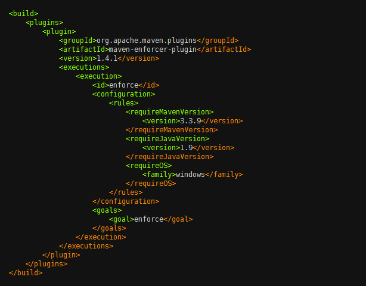
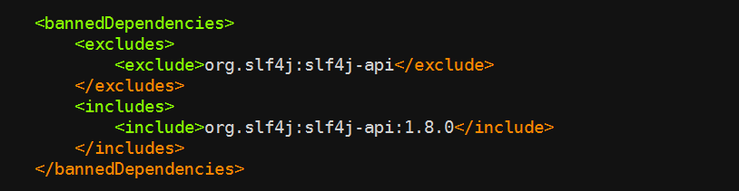
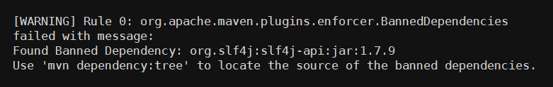
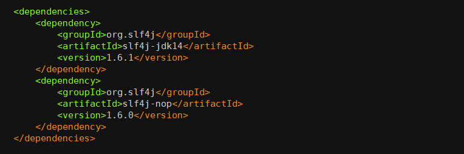
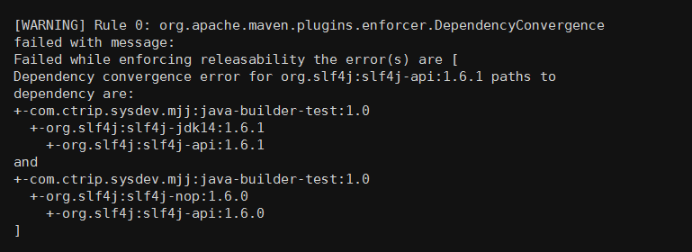
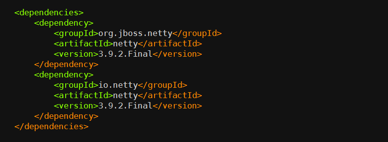
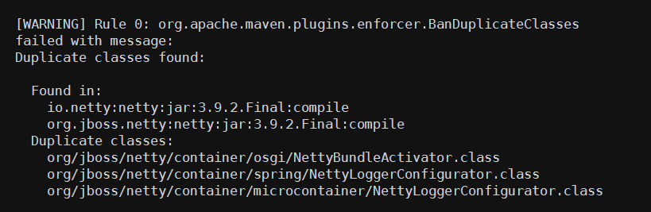
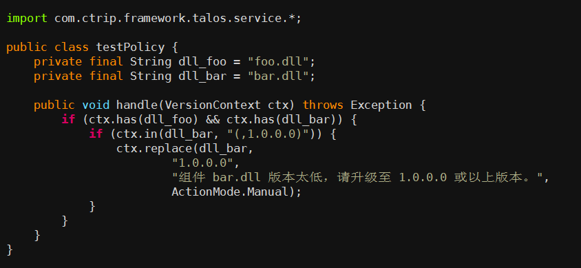

- 00 开篇词 量身定制你的持续交付体系.md
- 01 持续交付到底有什么价值？.md
- 02 影响持续交付的因素有哪些？.md
- 03 持续交付和DevOps是一对好基友.md
- 04 一切的源头，代码分支策略的选择.md
- 05 手把手教你依赖管理.md
- 06 代码回滚，你真的理解吗？.md
- 07 “两个披萨”团队的代码管理实际案例.md
- 08 测试环境要多少？从现实需求说起.md
- 09 测试环境要多少？从成本与效率说起.md
- 10 让环境自己说话，论环境自描述的重要性.md
- 11 “配置”是把双刃剑，带你了解各种配置方法.md
- 12 极限挑战，如何做到分钟级搭建环境？.md
- 13 容器技术真的是环境管理的救星吗？.md
- 14 如何做到构建的提速，再提速！.md
- 15 构建检测，无规矩不成方圆.md
- 16 构建资源的弹性伸缩.md
- 17 容器镜像构建的那些事儿.md
- 18 如何做好容器镜像的个性化及合规检查？.md
- 19 发布是持续交付的最后一公里.md
- 20 Immutable！任何变更都需要发布.md
- 21 发布系统一定要注意用户体验.md
- 22 发布系统的核心架构和功能设计.md
- 23 业务及系统架构对发布的影响.md
- 24 如何利用监控保障发布质量？.md
- 25 代码静态检查实践.md
- 26 越来越重要的破坏性测试.md
- 27 利用Mock与回放技术助力自动化回归.md
- 28 持续交付为什么要平台化设计？.md
- 29 计算资源也是交付的内容.md
- 30 持续交付中有哪些宝贵数据？.md
- 31 了解移动App的持续交付生命周期.md
- 32 细谈移动APP的交付流水线（pipeline）.md
- 33 进阶，如何进一步提升移动APP的交付效率？.md
- 34 快速构建持续交付系统（一）：需求分析.md
- 35 快速构建持续交付系统（二）：GitLab 解决代码管理问题.md
- 36 快速构建持续交付系统（三）：Jenkins 解决集成打包问题.md
- 37 快速构建持续交付系统（四）：Ansible 解决自动部署问题.md
- 持续交付专栏特别放送 答疑解惑.md
- 持续交付专栏特别放送 高效学习指南.md
- 结束语 越痛苦的事，越要经常做.md
15 构建检测，无规矩不成方圆
在这个专栏的第5篇文章《手把手教你依赖管理》中，我介绍了构建 Java 项目的一些最佳实践，同时也给你抛出了一个问题：如果用户偷懒不遵循这些规范该怎么办？
所谓没有规矩不成方圆，构建是持续交付过程中非常重要的一步，而好的构建检测则可以直接提升交付产物的质量，使持续交付的流水线又快又稳。所以，也就有了 Maven 构建中的大杀器：Maven Enforcer 插件。
什么是 Maven Enforcer 插件？
Maven Enforcer 插件提供了非常多的通用检查规则，比如检查 JDK 版本、检查 Maven 版本、检查依赖版本，等等。下图所示就是一个简单的使用示例。

上述的配置会在构建时（准确的说是在 validate 时）完成三项检查：
- requireMavenVersion检查 Maven 版本必须大于 3.3.9；
- requireJavaVersion检查 JDK 版本必须大于等于 1.9；
- requireOS检查 OS 必须是 Windows 系统。
如果你使用 Java 1.8， Maven 3.3.3， 在 Linux 上构建， 便会出现如下的错误：
- Rule 0: org.apache.maven.plugins.enforcer.RequireMavenVersion failed with message: Detected Maven Version: 3.3.3 is not in the allowed range 3.3.9.
- Rule 1: org.apache.maven.plugins.enforcer.RequireJavaVersion failed with message: Detected JDK Version: 1.8.0-77 is not in the allowed range 1.9.
- Rule 2: org.apache.maven.plugins.enforcer.RequireOS failed with message: OS Arch: amd64 Family: unix Name: linux Version: 3.16.0-43-generic is not allowed by Family=windows
从而导致构建失败。
那么，是否有办法在所有应用的构建前都执行Enforcer的检查呢。
我在专栏的第5篇文章《手把手教你依赖管理》中，也已经介绍了在携程内部，一般 Java 应用的继承树关系，每个项目都必须继承来自技术委员会或公司层面提供的 super-pom。携程在 super-pom 之上又定义了一层 super-rule 的 pom，这个pom 中定义了一系列的 Enforcer 规则。 这样，只要是集成了 super-pom 的项目，就会在构建时自动运行我们所定义的检查。
也许你会问了， 如果用户不继承 super-pom 是不是就可以跳过这些规则检查了？是的， 继承 super-pom 是规则检查的前提。
但是，我们不会给用户这样的机会， 因为上线走的都是统一的构建系统。
构建系统在构建之前会先检查项目的继承树，继承树中必须包含 super-pom， 否则构建失败。并且，构建系统虽然允许用户自定义 Maven 的构建命令，但是会将 Enforcer 相关的参数过滤掉，用户填写的任何关于Enforcer的参数都被视为无效。Enforcer会被强制按照统一标准执行，这样就保证了所有应用编译时都要经过检查。
因为携程的构建系统只提供几个版本的 Java 和 Maven，并且操作系统是统一的 Linux CentOS版本，所以就不需要使用之前例子中提到的三个检查，一定程度的缩小标准化范围，也是有效的质量保证手段。
了解了Maven Enforcer插件，我再从Maven Enforcer内置的规则、自定义的Enforcer检查规则，以及构建依赖检查服务这三个方面，带你一起看看构建监测的“豪华套餐”，增强你对交付产物的信心。
丰富的内置的 Enforcer 规则
Maven Enforcer 提供了非常丰富的内置检查规则，在这里，我给你重点介绍一下bannedDependencies 规则、dependencyConvergence 规则，和banDuplicateClasses 规则。
第一，bannedDependencies 规则
该规则表示禁止使用某些依赖，或者某些依赖的版本，使用示例：

该代码检查的逻辑是，只允许使用版本大于等于 1.8.0 的 org.slf4j:slf4j-api 依赖，否则将会出现如下错误：

bannedDependencies 规则的常见应用场景包括：
当我们知道某个 jar 包的某个版本有严重漏洞时，可以用这种方法禁止用户使用，从而避免被攻击；
某个公共组件的依赖必须要大于某个版本时，你也可以使用这个方法禁止用户直接引用不兼容的依赖版本，避免公共组件运行错误。
第二，dependencyConvergence 规则
在《手把手教你依赖管理》一文中，我介绍了Maven 的依赖仲裁的两个原则：最短路径优先原则和第一声明优先原则。
但是，Maven 基于这两个原则处理依赖的方式过于简单粗暴。毕竟在一个成熟的系统中，依赖的关系错综复杂，用户很难一个一个地排查所有依赖的关系和冲突，稍不留神便会掉进依赖的陷阱里，这时 dependencyConvergence 就可以粉墨登场了。
dependencyConvergence规则的作用是： 当项目中的 A 和 B 分别引用了不同版本的C时， Enforce 检查失败。 下面这个实例，可以帮你理解这个规则的作用。

org.slf4j:slf4j-jdk14:1.6.1依赖了 org.slf4j:slf4j-api:1.6.1， 而 org.slf4j:slf4j-nop:1.6.0依赖了 org.slf4j:slf4j-api:1.6.0，当我们在构建项目时， 便会有如下错误：

这时就需要开发人员介入了，使用 dependecy 的 exclusions 元素排除掉一个不合适的版本。 虽然这会给编程带来一些麻烦， 但是非常必要。因为，我始终认为你应该清楚地知道系统依赖了哪些组件， 尤其是在某些组价发生冲突时，这就更加重要了。
第三，banDuplicateClasses 规则
该规则是 Extra Enforcer Rules 提供的，主要目的是检查多个jar 包中是否存在同样命名的 class，如果存在编译便会报错。 同名 class 若内容不一致，可能会导致 java.lang.NoSuchFieldError，java.lang.NoSuchMethodException 等异常，而且排查起来非常困难，因为人的直觉思维很难定位到重复类这个非显性错误上，例如下面这种情况：
org.jboss.netty包与io.netty包中都包含一个名为NettyBundleActivator的类，另外还有2个重复类：spring/NettyLoggerConfigurator 和 microcontainer/NettyLoggerConfigurator。

当激活了 banDuplicateClasses 规则之后，Enforcer检查，便会有如下的报错：

通常情况下，用户需要排除一个多余的 jar 包来解决这个问题，但有些情况下两个 jar 包都不能被排除，如果只是个别类名冲突了，那么可以通过 ignoreClasses 去忽略冲突的类，类名可以使用通配符（*），如: org.jboss.netty.container.*。
但是，用户不能随意更改这个配置，因为它必须得到一定的授权，否则随意忽略会产生其他不确定的问题。因此我们将这个插件做了一些改动，通过API来获取 ignoreClasses 的内容。当用户有类似的需求时，可以提交 ignoreClasses ，但必须申请，经过 Java 专家审批之后才可忽略掉。
自定义的 Enforcer 检查规则
除了上述的官方规则，实际上携程还做了若干个扩展的规则，如：
CheckVersion，用于检查模块的版本号必须是数字三段式，或者带有 SNAPSHOT 的数字三段式；
CheckGroupId，用于检查 GroupId 是否符合规范，我们为每个部门都分别指定了GroupId；
CheckDistributionManagementRepository，用于检查项目的 distributionManagement 中的 repository 节点，并为每个部门都指定了他们在 Nexus 上面的 repositroy；
CheckSubModuleSaveVersion，用于检查子模块版本号是否与父模块版本号一致。
以上，便是携程基于 Maven Enforcer 在构建检查上的一些实践，你可以借鉴使用。
但是，有时候 Maven Enforcer 也无法满足我们所有的需求，比如，它无法完成非 Java 项目的检查。因此，我们还有一个通用的依赖检查服务。
构建依赖检查服务
其他语言， 比如 C#，NodeJS 等，没有 Maven Enforcer 这样成熟的工具来做构建时的依赖检查。对于这类语言我们的做法是：构建后，收集该项目所有的依赖及其版本号，将这些数据发送给依赖检查服务 Talos，Talos 根据内置的规则进行依赖检查。Talos是一套携程自研的，独立的，组件依赖检查系统，其中包含的检查逻辑，完全可以自由定义。
而且，Talos依赖检查的逻辑更新非常灵活，可以直接在平台内使用 Java 代码在线编写检查逻辑，提交后便可实时生效。
以下是一段 .NET 项目检查逻辑的示例代码：

该逻辑的含义是： 当项目的依赖存在 foo.dll 和 bar.dll 时，bar.dll 的版本号必须大于 1.0.0.0。看， 是不是非常方便快捷通用！
这样一套组合拳下来，构建检测以及项目依赖的问题已不再那么让人望而生畏了。因此，工欲善其事必先利其器， 好的工具可以解放大量的生产力，最重要的是构建检测后的交付让你我更有信心了。有条不紊的流程与规范，就像一列高速列车下的枕木，时刻保证着整个系统稳定而可靠地推进。
总结与实践
我围绕着构建检测，和你一起学习并介绍了：
Maven Enforcer 插件可以帮我们更好地完成编译检测；
可以使用内置的 Maven Enforcer 规则，覆盖常规检测；
可以使用自定义 Maven Enforcer 检查规则的方式，增加版本号规则等的检查；
Maven Enforcer 之外，你还可以自己丰富一些例如依赖版本检测这样的服务，以提高检测效果。
Maven Enforcer 提供了非常丰富的内置检查规则，感兴趣的话，你可以通过 https://maven.apache.org/enforcer/enforcer-rules/index.html 以及 http://www.mojohaus.org/extra-enforcer-rules/ 逐个尝试这些规则，并说说哪些规则是你工作总最最需要的。
欢迎你给我留言。
© 2019 - 2023 Liangliang Lee. Powered by gin and hexo-theme-book.